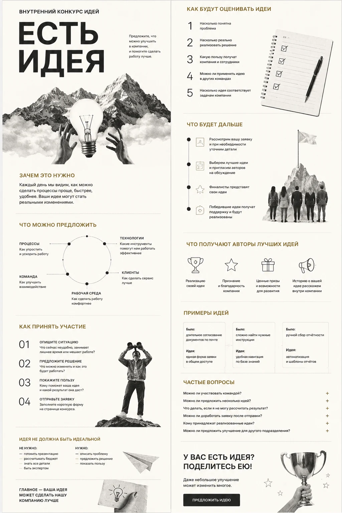
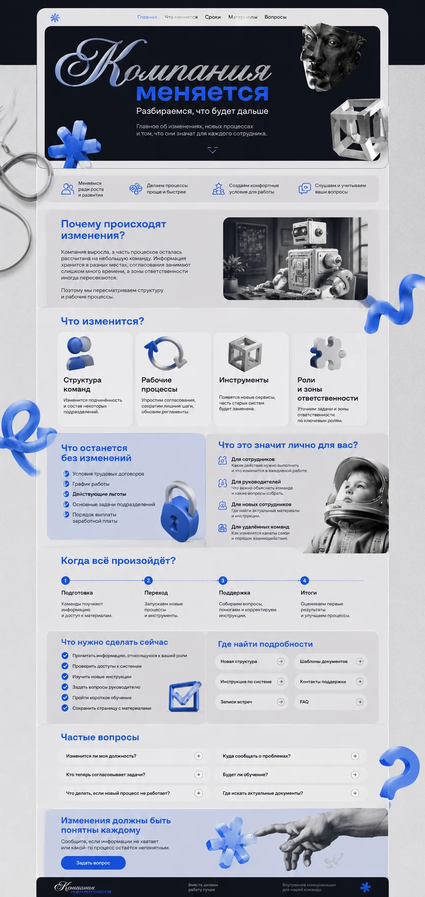
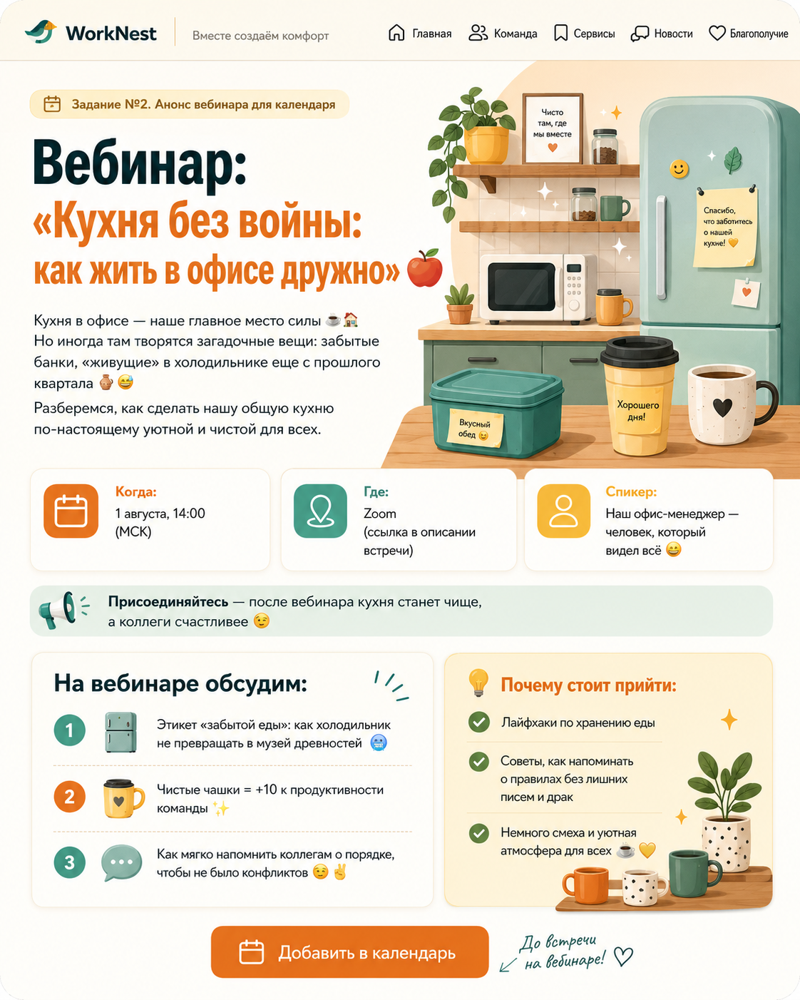

Компания растёт
Правил и процессов становится больше, а информация остаётся в разных чатах и файлах
[02] Внутренние коммуникации
От сообщения к пониманию
Помогаю объяснять информацию так, чтобы её могли быстро понять люди с разным опытом, уровнем подготовки и должностью — от нового сотрудника до руководителя
Перевожу сложные документы, процессы и изменения на понятный язык. Продумываю структуру, текст и визуальную подачу, чтобы главное не потерялось


[03] Главное
Сообщение отправлено — это ещё не значит, что его поняли
Кто-то внимательно читает длинные документы. Кому-то проще понять схему, таблицу или короткую инструкцию. Новичку нужен контекст, опытному сотруднику — только изменения и порядок действий, руководителю — результат
[04] С какими задачами можно прийти
Проверьте, узнаёте ли вы свою ситуацию
Правил и процессов становится больше, а информация остаётся в разных чатах и файлах
Нужно спокойно рассказать сотрудникам, что меняется, почему и что будет дальше
Важная информация есть, но её сложно найти или неудобно использовать
Письма, памятки и презентации говорят разным языком и выглядят разрозненно
[05] Что я делаю
Под задачу, аудиторию и рабочий сценарий
Покажу, что изменилось, кого это касается и что нужно сделать
Соберу путеводитель новичка, памятку или маршрут первых дней и отделю обязательное от дополнительного
Переработаю сложный документ в инструкцию, чек-лист, схему или пошаговый материал
Выстрою структуру внутренней базы знаний и приведу материалы к единому формату
Создам шаблоны новостей, дайджестов, объявлений и презентаций
Оформление поможет сотруднику быстрее увидеть главное и понять информацию
[06] Можно начать, даже если
Идеального технического задания не требуется
Нажмите на ситуацию, чтобы увидеть, с чего можно начать работу
Можно прислать документы, презентации, переписку или заметки. Я уберу лишнее и соберу понятную структуру
Предложу канал и подачу под задачу, аудиторию и срок жизни информации
Уберу лишнее, расставлю смысловые акценты и сделаю понятным действие сотрудника
Подстрою тон, лексику и визуальную систему под существующий бренд
[07] Проекты
Два больших проекта и два рабочих примера

Большой материал и последовательность сообщений для сотрудников
Компания хочет вовлечь сотрудников в улучшение процессов, но сама механика конкурса остаётся непонятной. Люди не знают, какие предложения подходят, как оформить заявку и нужно ли готовить полноценный бизнес-проект
Сделать конкурс доступным для сотрудников разных подразделений, должностей и уровней подготовки — провести человека от первой мысли до отправки заявки
Создала структуру и тексты корпоративного лонгрида, упростила механику участия и собрала материал в единый визуальный сценарий
Единую страницу запуска вместо разрозненных писем и инструкций. Такой формат делает механику участия прозрачнее и помогает сократить количество типовых вопросов
Концепция, структура, тексты, редактура, пользовательский сценарий и визуальная подача

Единый информационный центр о новых процессах, сроках и действиях
Компания меняет структуру, процессы или рабочие инструменты, а сотрудники получают информацию частями. Это создаёт неопределённость и заставляет людей самостоятельно додумывать последствия
Объяснить, почему происходят изменения, что поменяется и останется прежним, когда начнут действовать новые правила и где получить помощь
Собрала информацию в последовательный сценарий — от бизнес-контекста до конкретных действий сотрудника
Единый источник информации вместо нескольких несвязанных сообщений. Материал помогает сделать коммуникацию последовательной и даёт руководителям общий сценарий разговора с командами
Анализ информации, структура, тексты, редактура, сценарий страницы и визуальная концепция
Ещё один рабочий пример

[08] Как проходит работа
Пять принципов понятной коммуникации
Определяю, что сотрудник должен понять, запомнить или сделать после прочтения
Материал по-разному работает для новичков, специалистов, линейных сотрудников и руководителей
Делю информацию на смысловые блоки, добавляю заголовки, навигацию и последовательность действий
Иногда лучше работает памятка, схема, чек-лист, презентация или короткая новость
Использую оформление не ради красоты, а чтобы помочь человеку быстрее понять информацию
[09] Результат
Не разовое сообщение, а понятный рабочий инструмент
Сотрудники видят, что изменилось и что от них требуется
Процессы и правила собраны в понятный маршрут
К материалу удобно возвращаться во время работы
Руководители и HR реже объясняют одно и то же
Они понятны не только авторам, но и тем, для кого созданы
[10] Контакты
Опишите задачу или пришлите материалы, которые уже есть.
Я помогу выбрать формат и собрать всё в понятную структуру
Достаточно нескольких строк